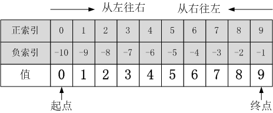

一、 Python可切片对象的索引方式¶

二、 Python切片操作的一般方式¶
一个完整的切片表达式包含两个:，用于分隔三个参数(start_index、end_index、step)，当只有一个:时，默认第三个参数step=1。
切片操作基本表达式：object[start_index:end_index:step]
step：正负数均可，其绝对值大小决定了切取数据时的‘‘步长”，而正负号决定了“切取方向”，正表示“从左往右”取值，负表示“从右往左”取值。当step省略时，默认为1，即从左往右以增量1取值。“切取方向非常重要！”“切取方向非常重要！”“切取方向非常重要！”，重要的事情说三遍！
start_index：表示起始索引（包含该索引本身）；该参数省略时，表示从对象“端点”开始取值，至于是从“起点”还是从“终点”开始，则由step参数的正负决定，step为正从“起点”开始，为负从“终点”开始。
end_index：表示终止索引（不包含该索引本身）；该参数省略时，表示一直取到数据“端点”，至于是到“起点”还是到“终点”，同样由step参数的正负决定，step为正时直到“终点”，为负时直到“起点”。
三、 Python切片操作详细例子¶
以下示例均以列表a = [0, 1, 2, 3, 4, 5, 6, 7, 8, 9]为例：
a = [0, 1, 2, 3, 4, 5, 6, 7, 8, 9]
1. 切取单个值¶
a = [0, 1, 2, 3, 4, 5, 6, 7, 8, 9] a[0] Out[11]: 0 a[-4] Out[12]: 6
2. 切取完整对象¶
>>>a[:] #从左往右 >>> [0, 1, 2, 3, 4, 5, 6, 7, 8, 9] >>>a[::]#从左往右 >>> [0, 1, 2, 3, 4, 5, 6, 7, 8, 9] >>>a[::-1]#从右往左 >>> [9, 8, 7, 6, 5, 4, 3, 2, 1, 0]
3. start_index和end_index全为正（+）索引的情况¶
>>>a[1:6] >>> [1, 2, 3, 4, 5] step=1，从左往右取值，start_index=1到end_index=6同样表示从左往右取值。
>>>a[1:6:-1] >>> [] 输出为空列表，说明没取到数据。 step=-1，决定了从右往左取值，而start_index=1到end_index=6决定了从左往右取值，两者矛盾，所以为空。
>>>a[6:1] >>> [] 同样输出为空列表。 step=1，决定了从左往右取值，而start_index=6到end_index=1决定了从右往左取值，两者矛盾，所以为空。
>>>a[:6] >>> [0, 1, 2, 3, 4, 5] step=1，从左往右取值，从“起点”开始一直取到end_index=6。
>>>a[:6:-1] >>> [9, 8, 7] step=-1，从右往左取值，从“终点”开始一直取到end_index=6。
>>>a[6:] >>> [6, 7, 8, 9] step=1，从左往右取值，从start_index=6开始，一直取到“终点”。
>>>a[6::-1] >>> [6, 5, 4, 3, 2, 1, 0] step=-1，从右往左取值，从start_index=6开始，一直取到“起点”。
4. start_index和end_index全为负（-）索引的情况¶
>>>a[-1:-6] >>> [] step=1，从左往右取值，而start_index=-1到end_index=-6决定了从右往左取值，两者矛盾，所以为空。 索引-1在-6的右边（如上图）
>>>a[-1:-6:-1] >>> [9, 8, 7, 6, 5] step=-1，从右往左取值，start_index=-1到end_index=-6同样是从右往左取值。 索引-1在6的右边（如上图）
>>>a[-6:-1] >>> [4, 5, 6, 7, 8] step=1，从左往右取值，而start_index=-6到end_index=-1同样是从左往右取值。 索引-6在-1的左边（如上图）
>>>a[:-6] >>> [0, 1, 2, 3] step=1，从左往右取值，从“起点”开始一直取到end_index=-6。
>>>a[:-6:-1] >>> [9, 8, 7, 6, 5] step=-1，从右往左取值，从“终点”开始一直取到end_index=-6。
>>>a[-6:] >>> [4, 5, 6, 7, 8, 9] step=1，从左往右取值，从start_index=-6开始，一直取到“终点”。
>>>a[-6::-1] >>> [4, 3, 2, 1, 0] step=-1，从右往左取值，从start_index=-6开始，一直取到“起点”。
5. start_index和end_index正（+）负（-）混合索引的情况¶
>>>a[1:-6] >>> [1, 2, 3] start_index=1在end_index=-6的左边，因此从左往右取值，而step=1同样决定了从左往右取值，因此结果正确
>>>a[1:-6:-1] >>> [] start_index=1在end_index=-6的左边，因此从左往右取值，但step=-则决定了从右往左取值，两者矛盾，因此为空。
>>>a[-1:6] >>> [] start_index=-1在end_index=6的右边，因此从右往左取值，但step=1则决定了从左往右取值，两者矛盾，因此为空。
>>>a[-1:6:-1] >>> [9, 8, 7] start_index=-1在end_index=6的右边，因此从右往左取值，而step=-1同样决定了从右往左取值，因此结果正确。
6. 连续切片操作¶
>>>a[:8][2:5][-1:] >>> [4] 相当于： a[:8]=[0, 1, 2, 3, 4, 5, 6, 7] a[:8][2:5]= [2, 3, 4] a[:8][2:5][-1:] = 4 理论上可无限次连续切片操作，只要上一次返回的依然是非空可切片对象。
7. 切片操作的三个参数可以用表达式¶
>>>a[2+1:3*2:7%3] >>> [3, 4, 5] 即：a[2+1:3*2:7%3] = a[3:6:1]
8. 其他对象的切片操作¶
前面的切片操作说明都以list为例进行说明，但实际上可进行的切片操作的数据类型还有很多，包括元组、字符串等等。
>>> (0, 1, 2, 3, 4, 5)[:3] >>> (0, 1, 2) 元组的切片操作
>>>'ABCDEFG'[::2] >>>'ACEG' 字符串的切片操作
>>>for i in range(1,100)[2::3][-10:]: print(i) 就是利用range函数生成1-99的整数，然后取3的倍数，再取最后十个。
四、 常用切片操作¶
以列表：a = [0, 1, 2, 3, 4, 5, 6, 7, 8, 9] 为说明对象
1.取偶数位置¶
>>>b = a[::2] [0, 2, 4, 6, 8]
2.取奇数位置¶
>>>b = a[1::2] [1, 3, 5, 7, 9]
3.拷贝整个对象¶
>>>b = a[:] #★★★★★ >>>print(b) #[0, 1, 2, 3, 4, 5, 6, 7, 8, 9] >>>print(id(a)) #41946376 >>>print(id(b)) #41921864 或 >>>b = a.copy() >>>print(b) #[0, 1, 2, 3, 4, 5, 6, 7, 8, 9] >>>print(id(a)) #39783752 >>>print(id(b)) #39759176
需要注意的是：[:]和.copy()都属于“浅拷贝”，只拷贝最外层元素，内层嵌套元素则通过引用，而不是独立分配内存。
>>>a = [1,2,['A','B']] >>>print('a={}'.format(a)) >>>b = a[:] >>>b[0] = 9 #修改b的最外层元素，将1变成9 >>>b[2][0] = 'D' #修改b的内嵌层元素 >>>print('a={}'.format(a)) >>>print('b={}'.format(b)) >>>print('id(a)={}'.format(id(a))) >>>print('id(b)={}'.format(id(b))) a=[1, 2, ['A', 'B']] #原始a a=[1, 2, ['D', 'B']] #b修改内部元素A为D后，a中的A也变成了D，说明共享内部嵌套元素，但外部元素1没变。 b=[9, 2, ['D', 'B']] #修改后的b id(a)=38669128 id(b)=38669192
4.修改单个元素¶
>>>a[3] = ['A','B'] [0, 1, 2, ['A', 'B'], 4, 5, 6, 7, 8, 9]
5.在某个位置插入元素¶
>>>a[3:3] = ['A','B','C'] [0, 1, 2, 'A', 'B', 'C', 3, 4, 5, 6, 7, 8, 9] >>>a[0:0] = ['A','B'] ['A', 'B', 0, 1, 2, 3, 4, 5, 6, 7, 8, 9]
6.替换一部分元素¶
>>>a[3:6] = ['A','B'] [0, 1, 2, 'A', 'B', 6, 7, 8, 9]
五、 总结¶
（一）start_index、end_index、step可同为正、同为负，也可正负混合使用。但必须遵循一个原则，否则无法正确切取到数据：当start_index的位置在end_index的左边时，表示从左往右取值，此时step必须是正数（同样表示从左往右）；当start_index的位置在end_index的右边时，表示从右往左取值，此时step必须是负数（同样表示从右往左），即两者的取值顺序必须是相同的。对于特殊情况，当start_index或end_index省略时，起始索引和终止索引由step的正负来决定，不会存在取值方向出现矛盾的情况（即不会返回空列表[]），但正和负取到的结果是完全不同的，因为一个向左一个向右。
（二）在利用切片时，step的正负是必须要考虑的，尤其是当step省略时。比如a[-1:]，很容易就误认为是从“终点”开始一直取到“起点”，即a[-1:]= [0, 1, 2, 3, 4, 5, 6, 7, 8, 9]，但实际上a[-1:]=a[-1]=9，原因在于step=1表示从左往右取值，而起始索引start_index=-1本身就是对象的最右边的元素了，再往右已经没数据了，因此只有a[-1]一个元素。